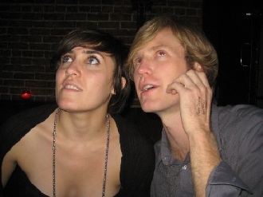
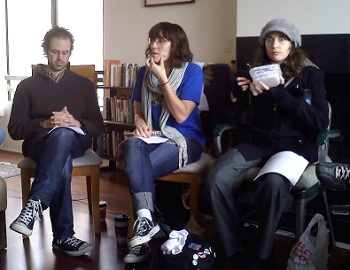

LAUREN LUDWIG
Director / Contributing Writer
Lauren Ludwig is a director, writer and performer who splits her time between the Lost Moon of Jupiter and Los Angeles. Since moving to this coast three years ago, she has written and directed a number of short films including Lost Moon Radio's first music video. She currently works as a Writers' Assistant, most recently on ABC's series The Gates (where she enjoyed penning the fictional blog of the character "Mia") and Missing. Before heading west, Lauren worked in Chicago where she founded and ran the theater company Big Theater. With them, she performed in a number of productions including Borders of Paradise and Contents May Be Extremely Hot, which she co-wrote. Lauren also adapted and directed Kurt Vonnegut’s Welcome to The Monkey House, named a “Critic’s Choice” by the Chicago Reader. In 2006, Lauren was the recipient of a University of Chicago Summer Residency, through which she developed a play about the life and art of Charlie Chaplin. 15 Tramps went on to be performed at Northwestern University’s National High School Institute the following summer. Just before striking out for LA, Lauren co-wrote and performed the eponymous role in the pilot Fang!, a “Finalist” in the Chicago Comedy Pilot Competition 2007. She likes to cite it as a key forerunner of the current vampire trend.
Lauren in Action...

With Ryan, plotting artistic world domination.

Leading a Sunday morning reading of new material.